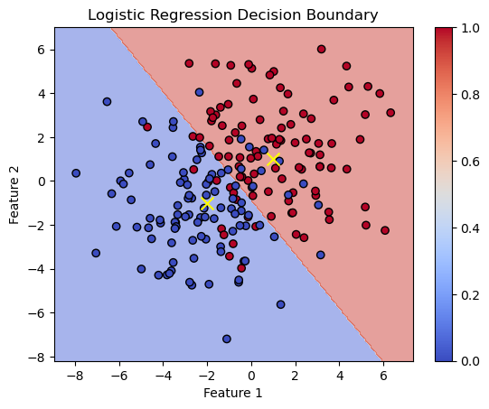
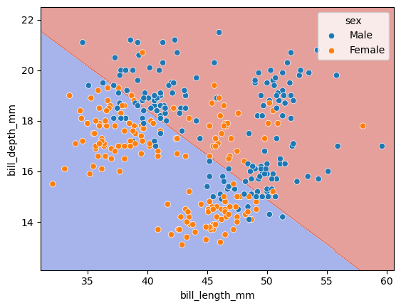
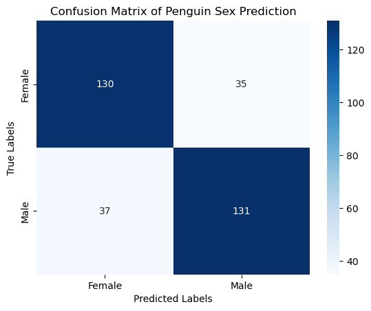
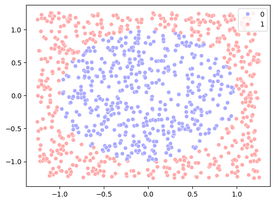
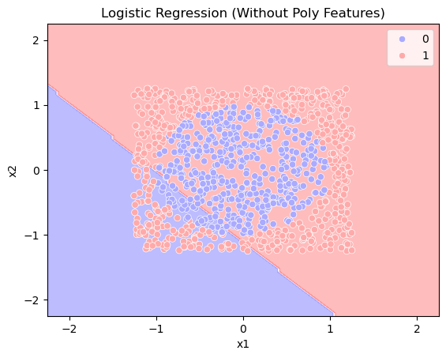
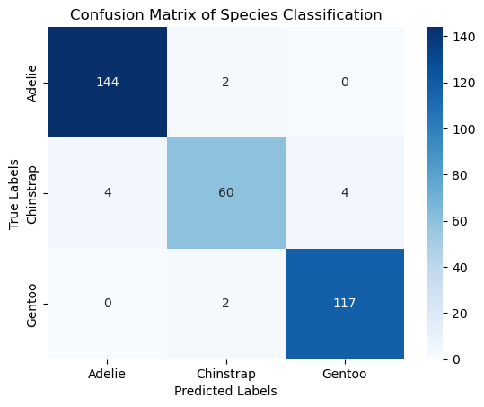
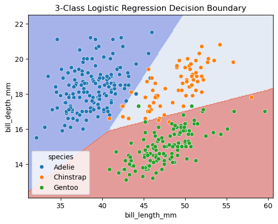

Week 7, Wed, 5/15#
import matplotlib.pyplot as plt
import numpy as np
from sklearn.linear_model import LogisticRegression
from sklearn.inspection import DecisionBoundaryDisplay
# Set random seed for reproducibility
np.random.seed(0)
# Number of samples per class
N = 100
# Generate data: class 1 centered at (1, 1) and class 2 at (-2, -1)
std = 5
x_class1 = np.random.multivariate_normal([1, 1], std*np.eye(2), N)
x_class2 = np.random.multivariate_normal([-2, -1], std*np.eye(2), N)
# Combine into a single dataset
X = np.vstack((x_class1, x_class2))
y = np.concatenate((np.ones(N), np.zeros(N)))
# Create a logistic regression classifier
clf = LogisticRegression()
clf.fit(X, y)
# Plot the decision boundaries using DecisionBoundaryDisplay
fig, ax = plt.subplots()
db_display = DecisionBoundaryDisplay.from_estimator(
clf,
X,
grid_resolution=200,
# response_method="predict_proba", # Can be "predict_proba" for probability contours
response_method="predict",
cmap='coolwarm',
alpha=0.5,
ax=ax
)
# Scatter plot of the data points
scatter = ax.scatter(X[:, 0], X[:, 1], c=y, edgecolors='k', cmap='coolwarm')
# scatter plot of the mean of gaussian distributions
ax.scatter([1, -2], [1, -1], c='yellow', marker='x', s=100, label='Class Centers')
# Adding color bar
cbar = plt.colorbar(scatter, ax=ax)
# Adding title and labels
ax.set_title('Logistic Regression Decision Boundary')
ax.set_xlabel('Feature 1')
ax.set_ylabel('Feature 2')
Text(0, 0.5, 'Feature 2')

import pandas as pd
import seaborn as sns
from sklearn.model_selection import train_test_split
from sklearn.linear_model import LogisticRegression
import matplotlib.pyplot as plt
from sklearn.preprocessing import StandardScaler
# Load the dataset
df = sns.load_dataset('penguins')
# Drop rows with missing values
df.dropna(inplace=True)
# Use features to predict sex
features = ['bill_length_mm', 'bill_depth_mm']
# Select features
X = df[features]
y = df['sex']
# Initialize and train the logistic regression model
clf = LogisticRegression(penalty=None)
clf.fit(X, y)
# prediction
y_pred = clf.predict(X)
# Calculate the training and test accuracy
score = clf.score(X, y)
print(f"Training accuracy: {score:.2f}")
Training accuracy: 0.78
y
0 Male
1 Female
2 Female
4 Female
5 Male
...
338 Female
340 Female
341 Male
342 Female
343 Male
Name: sex, Length: 333, dtype: object
clf.classes_
array(['Female', 'Male'], dtype=object)
y_pred[:5]
array(['Male', 'Female', 'Female', 'Female', 'Male'], dtype=object)
y_pred_proba = clf.predict_proba(X)
y_pred_proba
array([[0.49992132, 0.50007868],
[0.70860573, 0.29139427],
[0.55266441, 0.44733559],
[0.54734163, 0.45265837],
[0.18061042, 0.81938958],
[0.67795367, 0.32204633],
[0.32785431, 0.67214569],
[0.57480085, 0.42519915],
[0.14395903, 0.85604097],
[0.34937649, 0.65062351],
[0.79703243, 0.20296757],
[0.46952601, 0.53047399],
[0.0789741 , 0.9210259 ],
[0.81815319, 0.18184681],
[0.01765569, 0.98234431],
[0.65902686, 0.34097314],
[0.59367678, 0.40632322],
[0.6185772 , 0.3814228 ],
[0.66906797, 0.33093203],
[0.77413579, 0.22586421],
[0.70605864, 0.29394136],
[0.4181914 , 0.5818086 ],
[0.55822167, 0.44177833],
[0.59909414, 0.40090586],
[0.36975771, 0.63024229],
[0.80622499, 0.19377501],
[0.72612386, 0.27387614],
[0.64146776, 0.35853224],
[0.3448657 , 0.6551343 ],
[0.88450766, 0.11549234],
[0.13369079, 0.86630921],
[0.28570041, 0.71429959],
[0.33465689, 0.66534311],
[0.48649596, 0.51350404],
[0.37825844, 0.62174156],
[0.7758277 , 0.2241723 ],
[0.4425114 , 0.5574886 ],
[0.72976869, 0.27023131],
[0.10689291, 0.89310709],
[0.8754362 , 0.1245638 ],
[0.44705642, 0.55294358],
[0.31591262, 0.68408738],
[0.81057826, 0.18942174],
[0.05809877, 0.94190123],
[0.65279632, 0.34720368],
[0.39536213, 0.60463787],
[0.84875171, 0.15124829],
[0.19778644, 0.80221356],
[0.84643884, 0.15356116],
[0.3665468 , 0.6334532 ],
[0.72059957, 0.27940043],
[0.38139221, 0.61860779],
[0.91016093, 0.08983907],
[0.52483244, 0.47516756],
[0.90906716, 0.09093284],
[0.08032323, 0.91967677],
[0.84690639, 0.15309361],
[0.46036916, 0.53963084],
[0.87643623, 0.12356377],
[0.46482029, 0.53517971],
[0.94752693, 0.05247307],
[0.29957123, 0.70042877],
[0.92260255, 0.07739745],
[0.2193853 , 0.7806147 ],
[0.78372834, 0.21627166],
[0.51679452, 0.48320548],
[0.73398887, 0.26601113],
[0.12239555, 0.87760445],
[0.86945966, 0.13054034],
[0.29946636, 0.70053364],
[0.72500863, 0.27499137],
[0.49442 , 0.50558 ],
[0.94161433, 0.05838567],
[0.24593479, 0.75406521],
[0.91453554, 0.08546446],
[0.4535187 , 0.5464813 ],
[0.63957906, 0.36042094],
[0.63342309, 0.36657691],
[0.76460578, 0.23539422],
[0.13893067, 0.86106933],
[0.53616758, 0.46383242],
[0.66212181, 0.33787819],
[0.45833204, 0.54166796],
[0.49429506, 0.50570494],
[0.81128372, 0.18871628],
[0.4794775 , 0.5205225 ],
[0.93148193, 0.06851807],
[0.58041369, 0.41958631],
[0.86528297, 0.13471703],
[0.3510156 , 0.6489844 ],
[0.58600579, 0.41399421],
[0.45706592, 0.54293408],
[0.97393747, 0.02606253],
[0.27722489, 0.72277511],
[0.84875171, 0.15124829],
[0.18053646, 0.81946354],
[0.92060807, 0.07939193],
[0.34405245, 0.65594755],
[0.59909414, 0.40090586],
[0.42155364, 0.57844636],
[0.78347408, 0.21652592],
[0.32001225, 0.67998775],
[0.82849588, 0.17150412],
[0.2072025 , 0.7927975 ],
[0.87638209, 0.12361791],
[0.04788837, 0.95211163],
[0.64662721, 0.35337279],
[0.18932511, 0.81067489],
[0.15838961, 0.84161039],
[0.33865534, 0.66134466],
[0.80837234, 0.19162766],
[0.2904184 , 0.7095816 ],
[0.90252297, 0.09747703],
[0.38562542, 0.61437458],
[0.8739782 , 0.1260218 ],
[0.38586228, 0.61413772],
[0.73218826, 0.26781174],
[0.3845359 , 0.6154641 ],
[0.96102343, 0.03897657],
[0.345906 , 0.654094 ],
[0.71604589, 0.28395411],
[0.41483675, 0.58516325],
[0.77804667, 0.22195333],
[0.30605418, 0.69394582],
[0.68483722, 0.31516278],
[0.18721562, 0.81278438],
[0.68494509, 0.31505491],
[0.64264007, 0.35735993],
[0.75300095, 0.24699905],
[0.59343562, 0.40656438],
[0.86635207, 0.13364793],
[0.20220334, 0.79779666],
[0.90523427, 0.09476573],
[0.61083073, 0.38916927],
[0.71687905, 0.28312095],
[0.67784453, 0.32215547],
[0.98728584, 0.01271416],
[0.70479093, 0.29520907],
[0.87493358, 0.12506642],
[0.50669772, 0.49330228],
[0.51232213, 0.48767787],
[0.71249375, 0.28750625],
[0.82207834, 0.17792166],
[0.692621 , 0.307379 ],
[0.88770751, 0.11229249],
[0.3781409 , 0.6218591 ],
[0.19901148, 0.80098852],
[0.02741778, 0.97258222],
[0.02433995, 0.97566005],
[0.15341443, 0.84658557],
[0.01065706, 0.98934294],
[0.27620396, 0.72379604],
[0.18031474, 0.81968526],
[0.05098994, 0.94901006],
[0.11669031, 0.88330969],
[0.01437142, 0.98562858],
[0.20703834, 0.79296166],
[0.00953364, 0.99046636],
[0.2558412 , 0.7441588 ],
[0.04578987, 0.95421013],
[0.3506741 , 0.6493259 ],
[0.02229121, 0.97770879],
[0.01740077, 0.98259923],
[0.01173829, 0.98826171],
[0.12983483, 0.87016517],
[0.0867056 , 0.9132944 ],
[0.54468885, 0.45531115],
[0.16413932, 0.83586068],
[0.62232281, 0.37767719],
[0.02521726, 0.97478274],
[0.19051019, 0.80948981],
[0.02349242, 0.97650758],
[0.05414753, 0.94585247],
[0.04523367, 0.95476633],
[0.21608031, 0.78391969],
[0.00891233, 0.99108767],
[0.75452341, 0.24547659],
[0.00331945, 0.99668055],
[0.64849927, 0.35150073],
[0.03547553, 0.96452447],
[0.05748881, 0.94251119],
[0.30584192, 0.69415808],
[0.11946092, 0.88053908],
[0.00648632, 0.99351368],
[0.3767074 , 0.6232926 ],
[0.00796741, 0.99203259],
[0.03565049, 0.96434951],
[0.2681006 , 0.7318994 ],
[0.02914635, 0.97085365],
[0.3939047 , 0.6060953 ],
[0.07009696, 0.92990304],
[0.04660079, 0.95339921],
[0.08561875, 0.91438125],
[0.03310481, 0.96689519],
[0.03351711, 0.96648289],
[0.13863197, 0.86136803],
[0.33729035, 0.66270965],
[0.02752736, 0.97247264],
[0.32842793, 0.67157207],
[0.01960917, 0.98039083],
[0.53795845, 0.46204155],
[0.02587964, 0.97412036],
[0.4893204 , 0.5106796 ],
[0.02446138, 0.97553862],
[0.04369119, 0.95630881],
[0.09117882, 0.90882118],
[0.01656434, 0.98343566],
[0.40137969, 0.59862031],
[0.38103851, 0.61896149],
[0.00462731, 0.99537269],
[0.32460055, 0.67539945],
[0.07849534, 0.92150466],
[0.03223244, 0.96776756],
[0.04701135, 0.95298865],
[0.91066689, 0.08933311],
[0.24718002, 0.75281998],
[0.71637155, 0.28362845],
[0.43296001, 0.56703999],
[0.71460002, 0.28539998],
[0.87902345, 0.12097655],
[0.80806245, 0.19193755],
[0.63367904, 0.36632096],
[0.94918276, 0.05081724],
[0.60926056, 0.39073944],
[0.96603197, 0.03396803],
[0.33421187, 0.66578813],
[0.89098538, 0.10901462],
[0.65118528, 0.34881472],
[0.79068188, 0.20931812],
[0.38612357, 0.61387643],
[0.96094847, 0.03905153],
[0.48677137, 0.51322863],
[0.78538564, 0.21461436],
[0.53974834, 0.46025166],
[0.59060936, 0.40939064],
[0.8313901 , 0.1686099 ],
[0.77136072, 0.22863928],
[0.56779474, 0.43220526],
[0.96324225, 0.03675775],
[0.70352005, 0.29647995],
[0.61775137, 0.38224863],
[0.71271953, 0.28728047],
[0.41423023, 0.58576977],
[0.59517232, 0.40482768],
[0.92049841, 0.07950159],
[0.8313901 , 0.1686099 ],
[0.01402149, 0.98597851],
[0.56980658, 0.43019342],
[0.33626264, 0.66373736],
[0.94719778, 0.05280222],
[0.41025525, 0.58974475],
[0.9298361 , 0.0701639 ],
[0.42531475, 0.57468525],
[0.94582549, 0.05417451],
[0.31537278, 0.68462722],
[0.8961407 , 0.1038593 ],
[0.49802131, 0.50197869],
[0.28042318, 0.71957682],
[0.92146656, 0.07853344],
[0.87516342, 0.12483658],
[0.28042318, 0.71957682],
[0.92893019, 0.07106981],
[0.63900278, 0.36099722],
[0.80519174, 0.19480826],
[0.72725666, 0.27274334],
[0.84187315, 0.15812685],
[0.46419867, 0.53580133],
[0.78460908, 0.21539092],
[0.71750816, 0.28249184],
[0.91745255, 0.08254745],
[0.75091166, 0.24908834],
[0.89192418, 0.10807582],
[0.38818838, 0.61181162],
[0.88878004, 0.11121996],
[0.72917688, 0.27082312],
[0.86911891, 0.13088109],
[0.13955436, 0.86044564],
[0.83697931, 0.16302069],
[0.19106623, 0.80893377],
[0.28875204, 0.71124796],
[0.90545724, 0.09454276],
[0.42406843, 0.57593157],
[0.62413156, 0.37586844],
[0.59849376, 0.40150624],
[0.4778304 , 0.5221696 ],
[0.72826729, 0.27173271],
[0.70255944, 0.29744056],
[0.37659005, 0.62340995],
[0.7640656 , 0.2359344 ],
[0.19593638, 0.80406362],
[0.89143149, 0.10856851],
[0.52765075, 0.47234925],
[0.62509321, 0.37490679],
[0.2219487 , 0.7780513 ],
[0.70998791, 0.29001209],
[0.30856695, 0.69143305],
[0.89905503, 0.10094497],
[0.10931365, 0.89068635],
[0.8940746 , 0.1059254 ],
[0.53619314, 0.46380686],
[0.79059915, 0.20940085],
[0.0979685 , 0.9020315 ],
[0.6367617 , 0.3632383 ],
[0.08916842, 0.91083158],
[0.81563997, 0.18436003],
[0.30476004, 0.69523996],
[0.83267616, 0.16732384],
[0.29520349, 0.70479651],
[0.36182223, 0.63817777],
[0.73708284, 0.26291716],
[0.68518294, 0.31481706],
[0.17288326, 0.82711674],
[0.57206086, 0.42793914],
[0.03732412, 0.96267588],
[0.56440418, 0.43559582],
[0.53186206, 0.46813794],
[0.47680717, 0.52319283],
[0.91401823, 0.08598177],
[0.16087232, 0.83912768],
[0.92179888, 0.07820112],
[0.57980495, 0.42019505],
[0.40003471, 0.59996529],
[0.32025219, 0.67974781],
[0.81640578, 0.18359422],
[0.17941481, 0.82058519],
[0.83260651, 0.16739349],
[0.09397696, 0.90602304],
[0.32922279, 0.67077721],
[0.83753815, 0.16246185],
[0.78383047, 0.21616953],
[0.31825225, 0.68174775],
[0.79220083, 0.20779917],
[0.28228383, 0.71771617]])
import seaborn as sns
# Plot the decision boundaries using DecisionBoundaryDisplay
fig, ax = plt.subplots()
db_display = DecisionBoundaryDisplay.from_estimator(
clf,
X,
grid_resolution=200,
response_method="predict", # Can be "predict_proba" for probability contours
cmap='coolwarm',
alpha=0.5,
ax=ax
)
# Scatter plot of the data points
scatter = sns.scatterplot(data=df, x=df[features[0]], y=df[features[1]], hue='sex')

from sklearn.metrics import confusion_matrix
conf_matrix = confusion_matrix(y, y_pred)
conf_matrix
array([[130, 35],
[ 37, 131]])
# Plotting the confusion matrix
sns.heatmap(conf_matrix, annot=True, fmt='d', cmap='Blues', xticklabels=clf.classes_, yticklabels=clf.classes_)
plt.xlabel('Predicted Labels')
plt.ylabel('True Labels')
plt.title('Confusion Matrix of Penguin Sex Prediction')
plt.show()

import numpy as np
import matplotlib.pyplot as plt
import seaborn as sns
from sklearn.linear_model import LogisticRegression
from sklearn.preprocessing import PolynomialFeatures
from sklearn.metrics import accuracy_score
from sklearn.inspection import DecisionBoundaryDisplay
# Step 1: Generate data
np.random.seed(0)
n_samples = 1000
r = 1
s = np.sqrt(2*np.pi) * r
x1 = np.random.uniform(-s/2, s/2, n_samples)
x2 = np.random.uniform(-s/2, s/2, n_samples)
X = np.vstack((x1, x2)).T
y = (x1**2 + x2**2 > r).astype(int)
# Step 2: Visualize the data
sns.scatterplot(x=x1, y=x2, hue=y, palette='bwr')
<Axes: >

# Step 3: Logistic regression without polynomial features
model = LogisticRegression()
model.fit(X, y)
y_pred = model.predict(X)
# Step 4: Plot decision boundary (without polynomial features)
plt.figure()
disp = DecisionBoundaryDisplay.from_estimator(model, X, response_method="predict", alpha=0.3, cmap='bwr')
sns.scatterplot(x=x1, y=x2, hue=y, palette='bwr')
plt.xlabel("x1")
plt.ylabel("x2")
plt.title("Logistic Regression (Without Poly Features)")
acc = model.score(X, y)
print(f"Accuracy: {acc}")
Accuracy: 0.442
<Figure size 640x480 with 0 Axes>

X_poly = np.vstack((x1, x2, x1**2, x2**2)).T
model_poly = LogisticRegression()
model_poly.fit(X_poly, y)
y_poly_pred = model_poly.predict(X_poly)
acc = model_poly.score(X_poly, y)
print(f"Accuracy: {acc}")
model_poly.coef_
Accuracy: 0.994
array([[0.134259 , 0.13628499, 7.31227108, 7.34633247]])
import pandas as pd
import seaborn as sns
from sklearn.model_selection import train_test_split
from sklearn.linear_model import LogisticRegression
from sklearn.preprocessing import LabelEncoder
from sklearn.metrics import accuracy_score, confusion_matrix
import matplotlib.pyplot as plt
from sklearn.preprocessing import StandardScaler
# Load the dataset
df = sns.load_dataset('penguins')
# Drop rows with missing values
df.dropna(inplace=True)
features = ['bill_length_mm', 'bill_depth_mm']
# Select features
X = df[features]
y = df['species']
# Initialize and train the logistic regression model
clf = LogisticRegression()
clf.fit(X, y)
# Calculate the training and test accuracy
score = clf.score(X, y)
print(f"Accuracy: {score:.2f}")
# Predict on the test set
y_pred = clf.predict(X)
Accuracy: 0.96
# Evaluate the model
conf_matrix = confusion_matrix(y, y_pred)
print("Confusion Matrix:\n", conf_matrix)
# Plotting the confusion matrix
sns.heatmap(conf_matrix, annot=True, fmt='d', cmap='Blues', xticklabels=clf.classes_, yticklabels=clf.classes_)
plt.xlabel('Predicted Labels')
plt.ylabel('True Labels')
plt.title('Confusion Matrix of Species Classification')
plt.show()
Confusion Matrix:
[[144 2 0]
[ 4 60 4]
[ 0 2 117]]

import matplotlib.pyplot as plt
import numpy as np
from sklearn.linear_model import LogisticRegression
from sklearn.inspection import DecisionBoundaryDisplay
fig, ax = plt.subplots()
db_display = DecisionBoundaryDisplay.from_estimator(
clf,
X,
grid_resolution=200,
response_method="predict", # Can be "predict_proba" for probability contours
cmap='coolwarm',
alpha=0.5,
ax=ax
)
# Scatter plot of the data points
scatter = sns.scatterplot(data=df, x='bill_length_mm', y='bill_depth_mm', hue='species')
# Adding title and labels
ax.set_title('3-Class Logistic Regression Decision Boundary')
ax.set_xlabel(features[0])
ax.set_ylabel(features[1])
# Show plot
plt.show()
